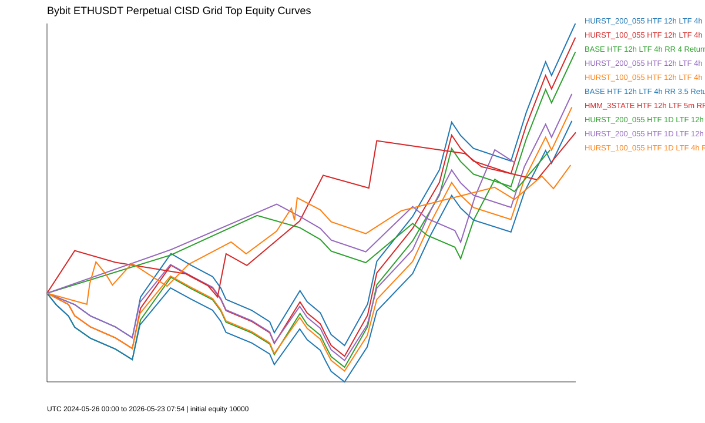
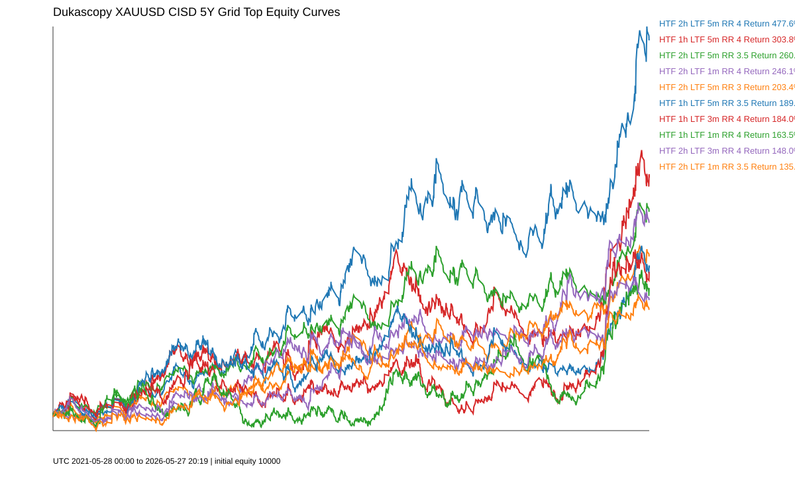

ETHUSDT Hurst / HMM 濾網研究
用兩年 ETHUSDT perpetual 資料，比較 BASE、Hurst 與 HMM regime proxy 對策略績效與回撤的影響。
- 最佳報酬
- 24.65%
- 最大回撤
- -8.10%
- 交易數
- 31
申請東吳大學經濟學系
我將生醫背景中重視證據、變因控制與資料判讀的訓練，延伸到金融市場研究。 這份作品集整理我用 Python 進行資料蒐集、策略回測、風險驗證與樣本外檢查的過程。
Portfolio Overview
用兩年 ETHUSDT perpetual 資料，比較 BASE、Hurst 與 HMM regime proxy 對策略績效與回撤的影響。
下載五年 US100 一分鐘資料，檢查資料缺漏與異常，再用 70/30 split、成本壓力與 Monte Carlo 驗證候選。
檢查黃金策略在全樣本、成本壓力與 walk-forward 下的表現，示範如何避免只看漂亮的歷史績效。
Evidence


Summary Table
| 案例 | 期間 | 方法 | 主要發現 | 書審價值 |
|---|---|---|---|---|
| ETHUSDT | 2024-2026 | Hurst / HMM proxy | 最佳 Hurst 組合 24.65%，高於 BASE 22.05% | 模型比較、金融資料分析 |
| US100 | 2021-2026 / 2025-2026 | 資料清理、70/30 split、Monte Carlo | 多數候選在重成本壓力下失敗 | 風險意識、嚴格驗證 |
| XAUUSD | 2021-2026 | 全樣本、walk-forward、成本壓力 | 全樣本亮眼，但樣本外不穩定 | 避免過度最佳化 |
Conclusion
這份作品集讓我學到，金融市場分析不能只追求單一漂亮績效，而是要建立可檢查的研究流程： 取得資料、清理資料、建立假設、回測模型、比較結果，最後用壓力測試與樣本外驗證修正判斷。 這樣的自學經驗也讓我更確定，進入經濟學系後，我希望系統性補強統計、計量經濟、金融市場與產業分析能力。
查看完整報告